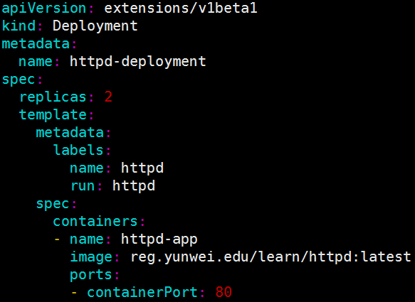

第6篇如何访问pod
一、通过 Service 访问 Pod：
我们不应该期望 Kubernetes Pod 是健壮的，而是要假设 Pod 中的容器很可能因为各种原因发生故障而死掉。Deployment 等 controller 会通过动态创建和销毁 Pod 来保证应用整体的健壮性。换句话说，Pod 是脆弱的，但应用是健壮的。
每个 Pod 都有自己的 IP 地址。当 controller 用新 Pod 替代发生故障的 Pod 时，新 Pod 会分配到新的 IP 地址。这样就产生了一个问题：
如果一组 Pod 对外提供服务（比如 HTTP），它们的 IP 很有可能发生变化，那么客户端如何找到并访问这个服务呢？
Kubernetes 给出的解决方案是 Service。
创建 Service
Kubernetes Service 从逻辑上代表了一组 Pod，具体是哪些 Pod 则是由 label 来挑选。Service 有自己 IP，而且这个 IP 是不变的。客户端只需要访问 Service 的 IP，Kubernetes 则负责建立和维护 Service 与 Pod 的映射关系。无论后端 Pod 如何变化，对客户端不会有任何影响，因为 Service 没有变。
来看个例子，创建下面的这个 Deployment：

我们启动了两个 Pod，运行 httpd 镜像，label 是 run: httpd，Service 将会用这个 label 来挑选 Pod。

Pod 分配了各自的 IP，这些 IP 只能被 Kubernetes Cluster 中的容器和节点访问。

接下来创建 Service，其配置文件如下：

① v1 是 Service 的 apiVersion。
② 指明当前资源的类型为 Service。
③ Service 的名字为 httpd-svc。
④ selector 指明挑选那些 label 为 run: httpd 的 Pod 作为 Service 的后端。
⑤ 将 Service 的 8080 端口映射到 Pod 的 80 端口，使用 TCP 协议。
执行 kubectl apply 创建 Service httpd-svc。

httpd-svc 分配到一个 CLUSTER-IP 10.68.132.230。可以通过该 IP 访问后端的 httpd Pod。

根据前面的端口映射，这里要使用 8080 端口。另外，除了我们创建的 httpd-svc，还有一个 Service kubernetes，Cluster 内部通过这个 Service 访问 kubernetes API Server。
通过 kubectl describe 可以查看 httpd-svc 与 Pod 的对应关系。
kubectl describe service httpd-svc
kubectl get pod -o wide

Endpoints 罗列了两个 Pod 的 IP 和端口。我们知道 Pod 的 IP 是在容器中配置的，那么 Service 的 Cluster IP 又是配置在哪里的呢？CLUSTER-IP 又是如何映射到 Pod IP 的呢？
答案是 iptables
二、Service IP 原理：
Service IP 原理
Service Cluster IP 是一个虚拟 IP，是由 Kubernetes 节点上的 iptables 规则管理的。
可以通过 iptables-save 命令打印出当前节点的 iptables 规则，因为输出较多，这里只截取与 httpd-svc Cluster IP 10.68.132.230 相关的信息：

这条规则的含义是：
如果 Cluster 内的 Pod要访问 httpd-svc，跳转到规则 KUBE-SVC-RL3JAE4GN7VOGDGP
KUBE-SVC-RL3JAE4GN7VOGDGP 规则如下：

- 1/2的概率跳转到规则 KUBE-SEP-GSULT7CRYYSEJLVK。
- 1/2 的概率（剩下 2/3 的一半）跳转到规则 KUBE-SEP-VYMFHNMHVUQT37BD。
上面两个跳转的规则如下：

即将请求分别转发到后端的两个 Pod。通过上面的分析，我们得到如下结论：
iptables 将访问 Service 的流量转发到后端 Pod，而且使用类似轮询的负载均衡策略。
另外需要补充一点：Cluster 的每一个节点都配置了相同的 iptables 规则，这样就确保了整个 Cluster 都能够通过 Service 的 Cluster IP 访问 Service。
二、DNS 访问 Service：
在 Cluster 中，除了可以通过 Cluster IP 访问 Service，Kubernetes 还提供了更为方便的 DNS 访问。
DNS组件
kubeadm 部署时会默认安装 kube-dns 组件。

coredns 是一个 DNS 服务器。每当有新的 Service 被创建，coredns 会添加该 Service 的 DNS 记录。Cluster 中的 Pod 可以通过 <SERVICE_NAME>.<NAMESPACE_NAME> 访问 Service。
比如可以用 httpd-svc.default 访问 Service httpd-svc。
kubectl run busybox --rm -ti --image=reg.yunwei.edu/learn/busybox:latest /bin/sh
wget httpd-svc:8080

三、外网访问 Service：
外网如何访问 Service？
除了 Cluster 内部可以访问 Service，很多情况我们也希望应用的 Service 能够暴露给 Cluster 外部。Kubernetes 提供了多种类型的 Service，默认是 ClusterIP。
ClusterIP
Service 通过 Cluster 内部的 IP 对外提供服务，只有 Cluster 内的节点和 Pod 可访问，这是默认的 Service 类型，前面实验中的 Service 都是 ClusterIP。
NodePort
Service 通过 Cluster 节点的静态端口对外提供服务。Cluster 外部可以通过 <NodeIP>:<NodePort> 访问 Service。
LoadBalancer
Service 利用 cloud provider 特有的 load balancer 对外提供服务，cloud provider 负责将 load balancer 的流量导向 Service。目前支持的 cloud provider 有 GCP、AWS、Azur 等。
下面我们来实践 NodePort，Service httpd-svc 的配置文件修改如下：

添加 type: NodePort，重新创建 httpd-svc。

Kubernetes 依然会为 httpd-svc 分配一个 ClusterIP，不同的是：
- EXTERNAL-IP 为 none，表示可通过 Cluster 每个节点自身的 IP 访问 Service。
- PORT(S) 为 8080:26044。8080 是 ClusterIP 监听的端口，26044 则是节点上监听的端口。Kubernetes 会从 30000-32767 中分配一个可用的端口，每个节点都会监听此端口并将请求转发给 Service。

下面测试 NodePort 是否正常工作。

通过两个节点 IP + 26044 端口都能够访问 httpd-svc。
NodePort 默认是的随机选择，不过我们可以用 nodePort 指定某个特定端口。

现在配置文件中就有三个 Port 了：
nodePort 是节点上监听的端口。
port 是 ClusterIP 上监听的端口。
targetPort 是 Pod 监听的端口。